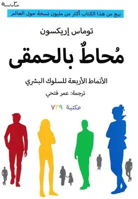

| 124-3000 |
نظرية الفستق |
30000 ل.س |
|
|
الناشر: دار الحضارة للنشر والتوزيع
تصنيف الكتاب: التنمية البشرية وتطوير الذات
ملخص: يتمحور حول تطوير النفس وتنميتها في هذا الجزء، حيث قام
بجمع مقالاته التي تتعلق في جانب التغيير والتطوير والتنمية
الذاتية وأهمية التفكير المستقل، كما أنه قام بعمل أفكار مبتكرة
لحل المشاكل التي تواجهنا في الحياة وذلك لشحن الطاقة الإيجابية
لدى القارئ.
أجزائه :
الجزء الأول: كيفية تطوير الذات
وتحسين طرق التفكير وزيادة الوعي لدى الأشخاص.
الجزء الثاني: يتضمن 52 موضوعًا في تطوير الذات
وأخطاء التفكير وعلاقتنا مع الناس.
|
| 224-3000 |
الدولة الأموية في الشام |
45000 ل.س |
|
|
الناشر: مكتبة المشرق
تصنيف الكتاب: تاريخ
ملخص: معلومات ذات قِيمة تاريخية كبيرة حول تاريخ الدولة
الأموية؛ ثاني خلافةٍ في تاريخ الإسلام, ففيه يتناول المؤلف —
بإسهابٍ — تأسيس الدولة الأموية, وفتوحاتها, وحضارتها, وأحوال
مجتمعها, وأخيرًا الأسباب التي أَوْدَتْ بمجدها.
المؤلف: أنيس زكريا
|
| 324-3000 |
الف ليلة وليلة |
25000 ل.س |
|
|
الناشر: دار المعارف
تصنيف الكتاب: قصص شعبية
ملخص: كتاب أسطوري يضم مجموعة من القصص الشعبية من الشرق الأوسط
وجنوب آسيا وشمال إفريقيا، تم جمعها خلال العصر الذهبي للإسلام.
يتم سرد القصص ضمن إطار قصة مركزية تتضمن الشخصية الرئيسية،
شهرزاد، التي تحكي حكايات للملك شهريار لتأجيل إعدامه.
أهم ثلاث قصص :
 علاء الدين والمصباح السحري
علي بابا والأربعون حرامي
رحلات السندباد السبع
علاء الدين والمصباح السحري
علي بابا والأربعون حرامي
رحلات السندباد السبع
|
| 424-3000 |
غربة الياسمين |
40000 ل.س |
|
|
الناشر: كيان للنشر والتوزيع
تصنيف الكتاب: الروايات والقصص الأدبية
ملخص: جميع أنواع الياسمين تفضل النّموّ في مكان مشمس، لكنّها
تتحمّل وجود شيء من الظلّ...
أجزائها :
غربة الياسمين
ياسمين العودة
ياسمين أبيض
|
| 524-3000 |
محاط بالحمقى |
35000 ل.س |
|
|
الناشر: الحافظ للنشر والتوزيع
تصنيف الكتاب: التنمية البشرية وتنمية وتطوير الذات
ملخص: كتاب محاط بالحمقى لمعرفة الأنماط الأربعة للسلوك البشري
وكيفية التعامل معها.

|